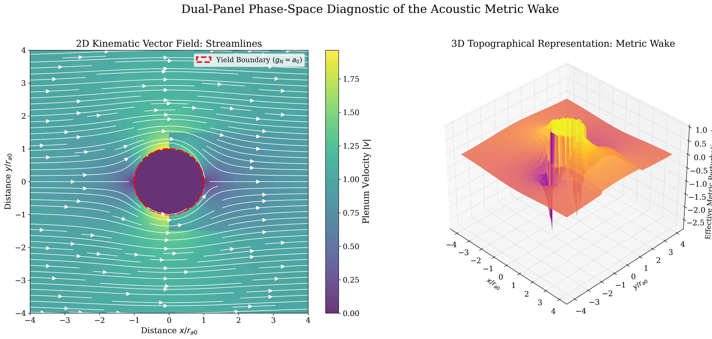
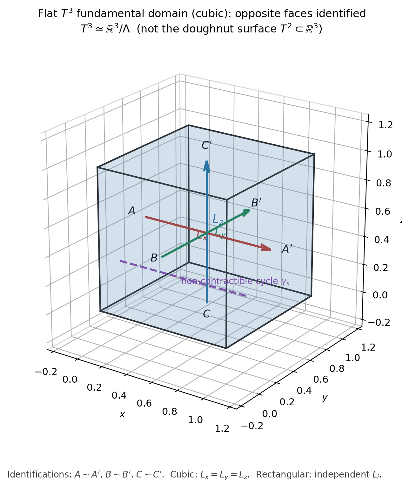
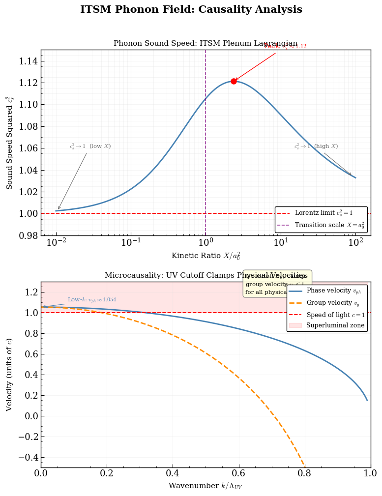
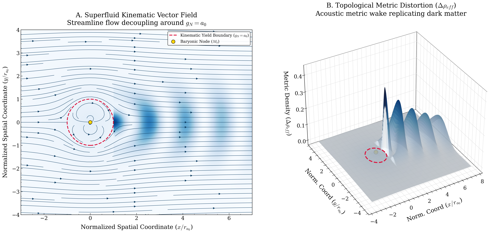

Physical identity
- Open dual polarity — entropy exhaust / syntropy intake
- Toroidal circuit / compact flat topology
- Fluid plenum & continuous wake response
- Winding–resonance ordering (principle open)
- GR tensor sector under minimal coupling
Open research · Recovery era · v12
Years of independent research into an open, finite-density vacuum plenum — rebuilt with the discipline the problem deserves: preserve physical identity, derive mechanisms, restore predictions only when earned.
Figures produced inside the ITSM programme



Identity first → mechanisms second → predictions only afterward.
This site documents the recovery programme: keep the physical intuitions that started ITSM, withdraw packaging that failed under scrutiny, and rebuild mechanisms under named gates before restoring observational claims.
Documentation across the recovery scope
Identity blocks — not automatic numbers

Source, identity, contact